Clicca sulle monete per vedere il retro
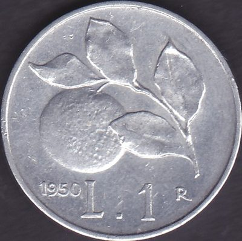
1946-1950
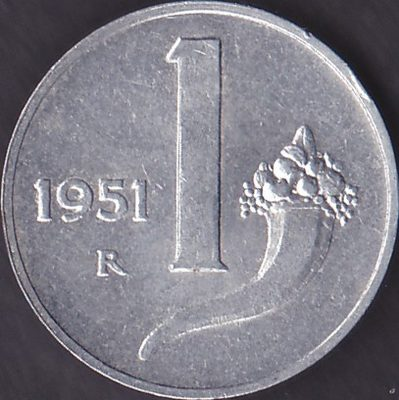
1951-2001
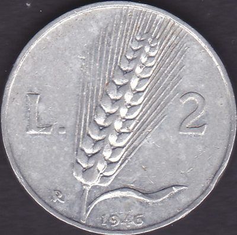
1946-1950
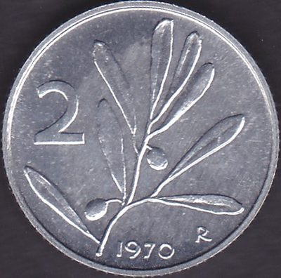
1953-2001
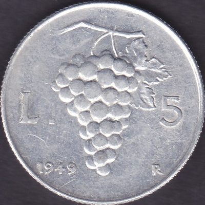
1946-1950
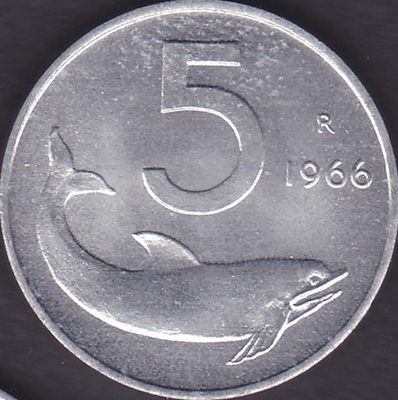
1951-2001
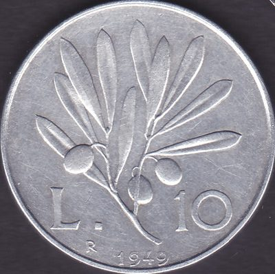
1946-1950
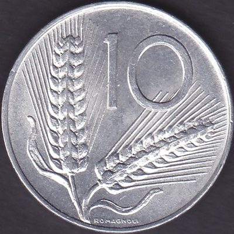
1951-2001
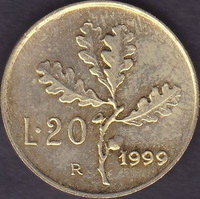
1957-2001
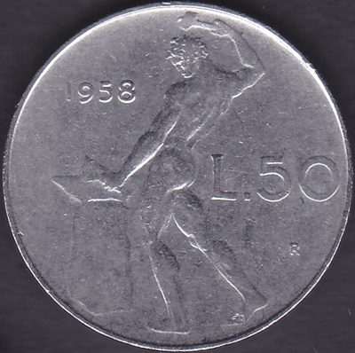
1954-1989
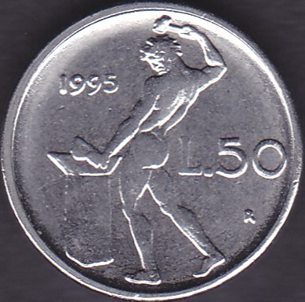
1990-1995
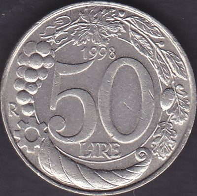
1996-2001
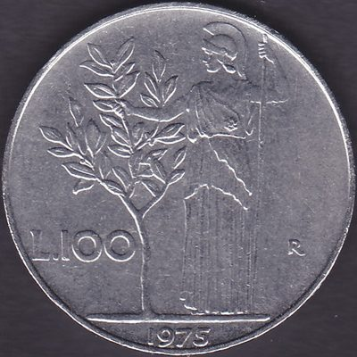
1955-2001
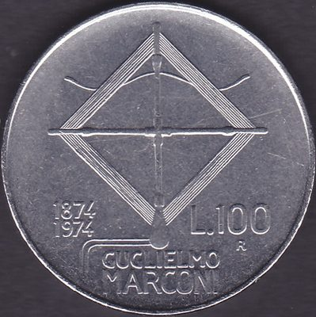
1974
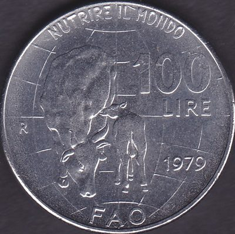
1979
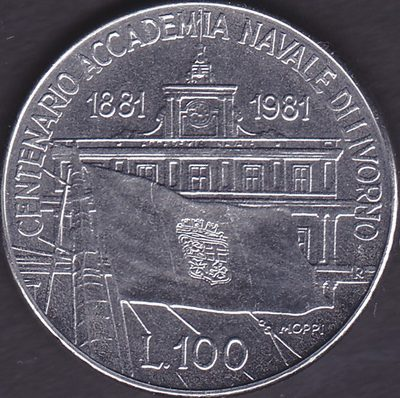
1981
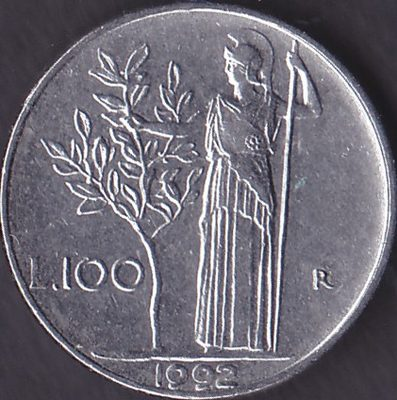
1990-1992
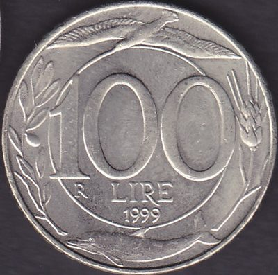
1993-2001
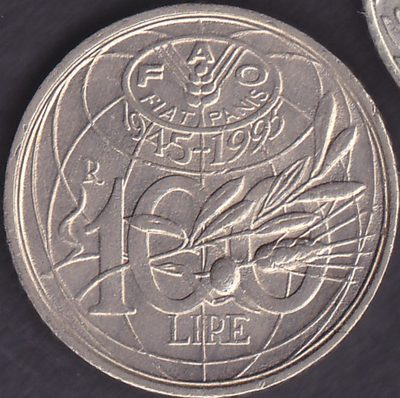
1995
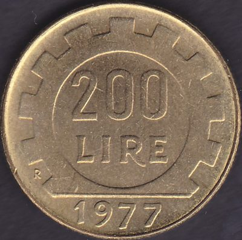
1977-2001
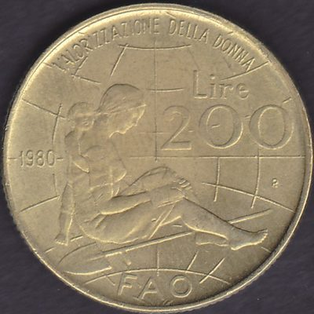
1980
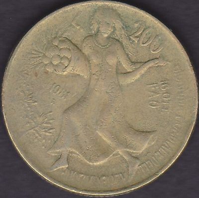
1981
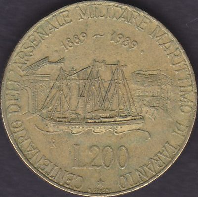
1989
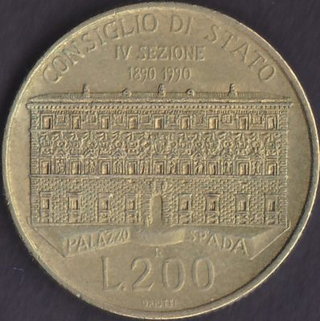
1990
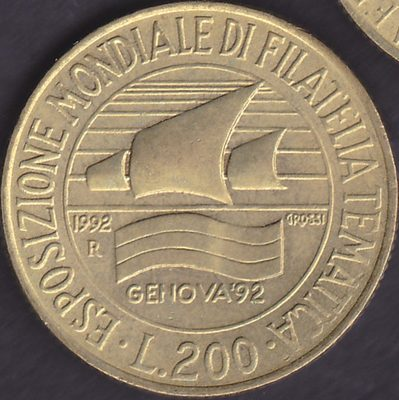
1992
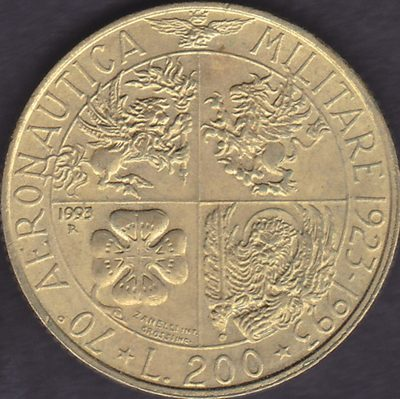
1993
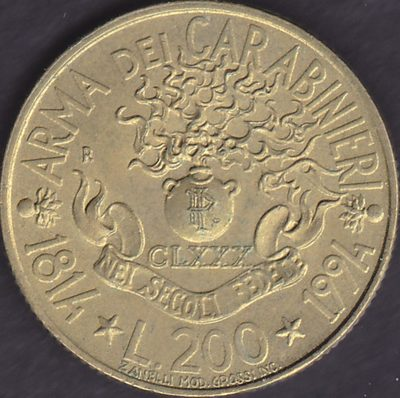
1994
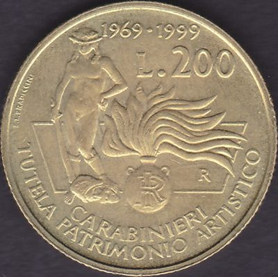
1996
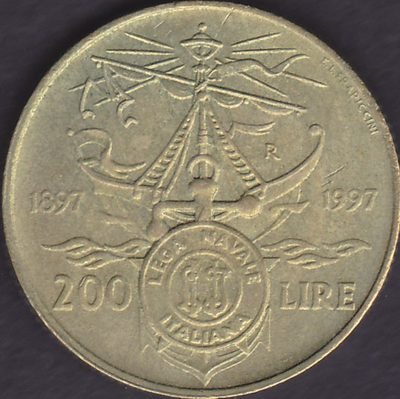
1997
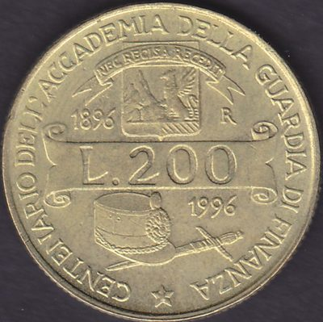
1999
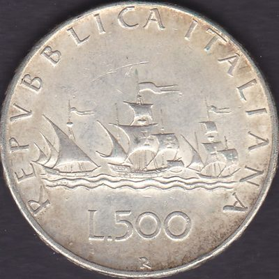
1958-2001
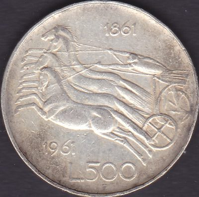
1961
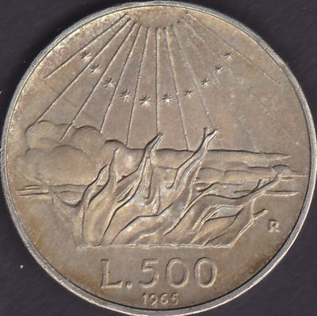
1965
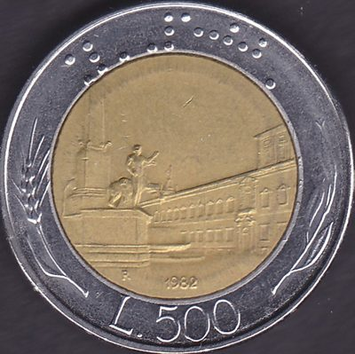
1982-2001
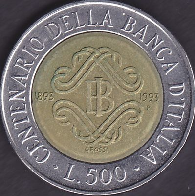
1993
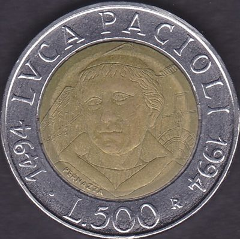
1994
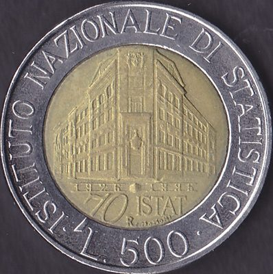
1996
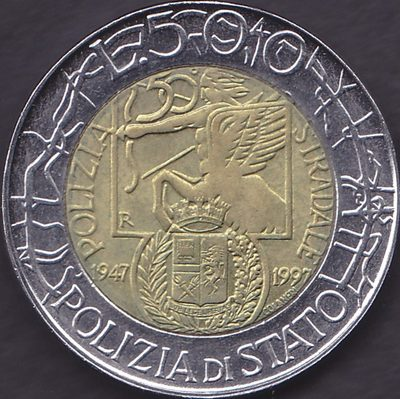
1997
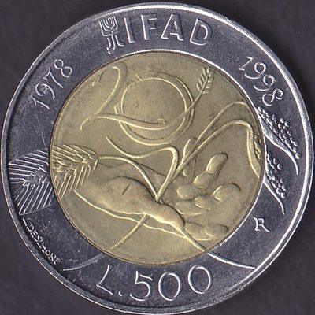
1998
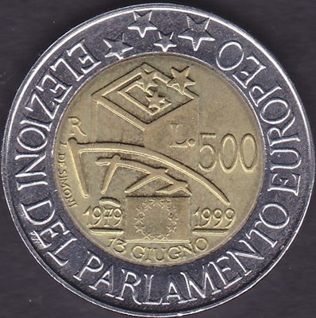
1999
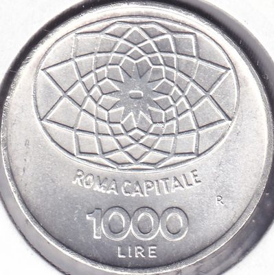
1970
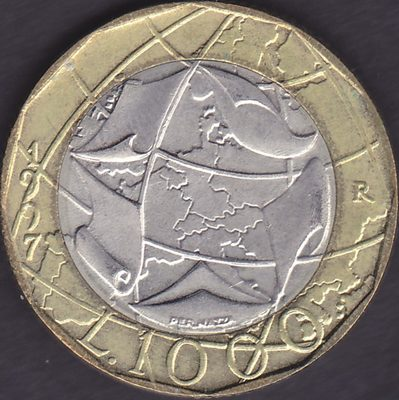
1997
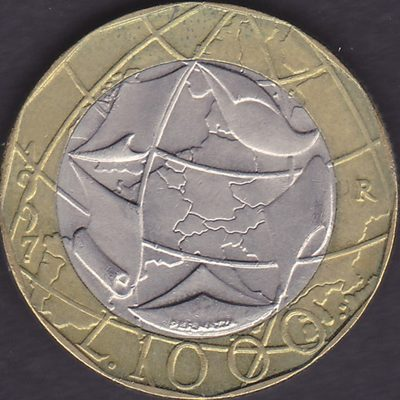
1997-2001